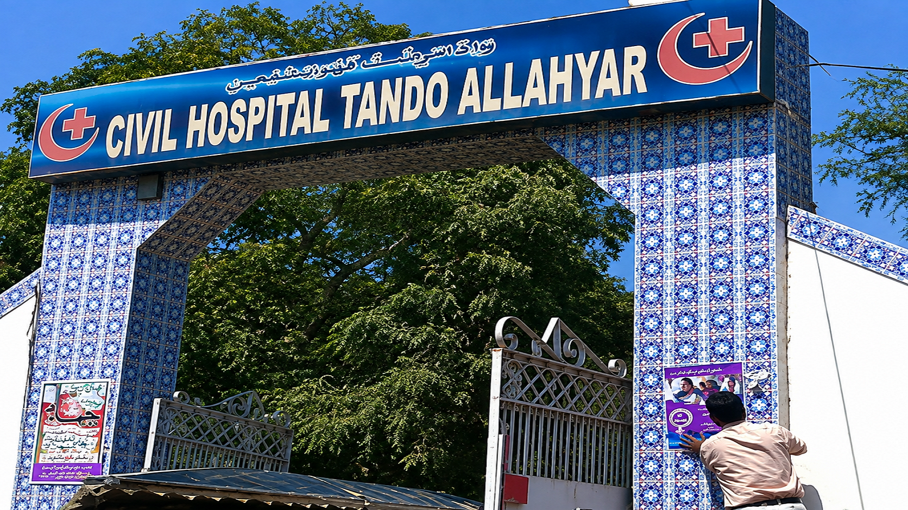
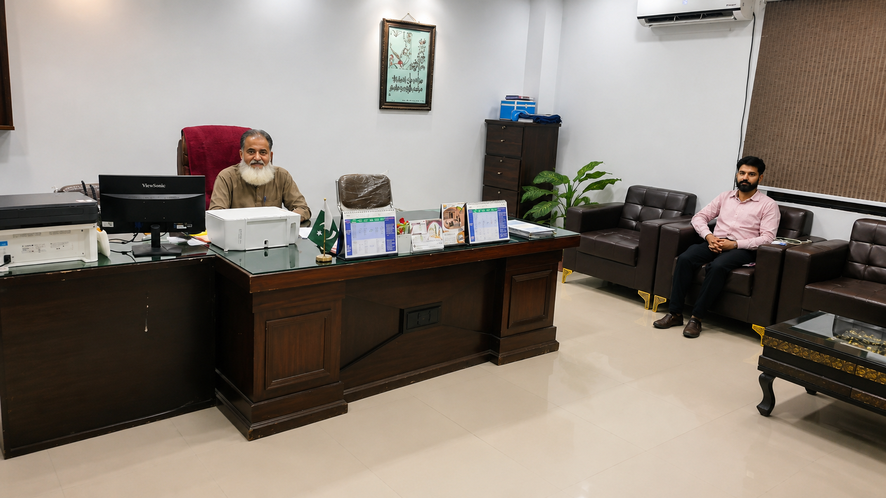

Find trusted hospitals and healthcare facilities in Tando Allahyar. Explore hospital information, locations, and available healthcare services.

A public hospital providing general healthcare, emergency care, and basic medical services to the local community.
Hyderabad Road, Tando Allahyar
Government Hospital

A district headquarters government hospital providing medical, diagnostic, and general healthcare services for residents.
CPM3+979, Tando Allahyar
Government Hospital

A specialized cardiac emergency facility providing rapid chest pain assessment, and initial heart attack treatment.
CPM3+HC, Tando Allahyar,
Government Hospital

A welfare hospital providing general treatment, OPD, emergency care, checkups, laboratory testing, and healthcare facilities.
FM5F+GG3, Rashidabad Tando Allahyar
Welfare Hospital

A community welfare hospital offering emergency, outpatient, newborn, diagnostic, and healthcare services.
FP7C+P9F, Tando Allahyar
Community Hospital

A charitable hospital providing affordable healthcare, general medicine, surgery, neurology, and other specialties.
FP6F+7XJ, Fayyaz Colony, Tando Allahyar
Welfare Hospital

A general community hospital providing medical treatment, checkups, laboratory, and essential healthcare services locally.
Hyderabad Road, Tando Allahyar
General Hospital

A general medical center providing healthcare, checkups, laboratory testing, and diagnostic services for local residents.
FP52+28Q, Tando Allahyar
Medical Center

Diagnostic specimen collection center providing blood and clinical sample collection through Aga Khan Hospital.
Mirpurkhas Road, Tando Allahyar
Private Healthcare Facility